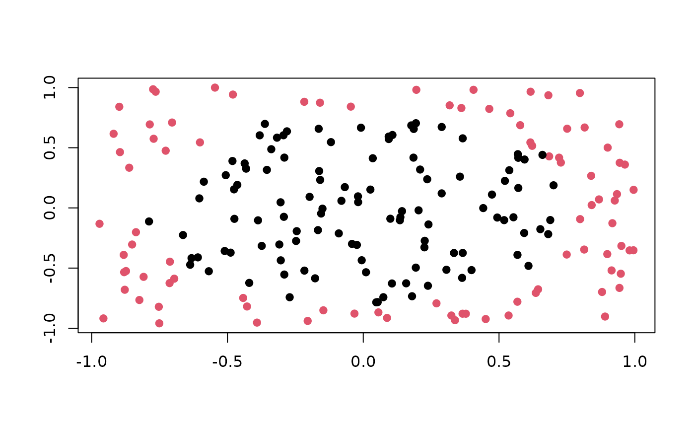

A TaskGenerator for the circle binary classification task in mlbench::mlbench.circle().
Creates a large circle containing a smaller circle.
Dictionary
This TaskGenerator can be instantiated via the dictionary mlr_task_generators or with the associated sugar function tgen():
mlr_task_generators$get("circle")
tgen("circle")See also
as.data.table(mlr_task_generators)for a table of available TaskGenerators in the running session (depending on the loaded packages).Extension packages for additional task types:
mlr3proba for probabilistic supervised regression and survival analysis.
mlr3cluster for unsupervised clustering.
Other TaskGenerator:
TaskGenerator,
mlr_task_generators_2dnormals,
mlr_task_generators_cassini,
mlr_task_generators_friedman1,
mlr_task_generators_moons,
mlr_task_generators_simplex,
mlr_task_generators_smiley,
mlr_task_generators_spirals,
mlr_task_generators_xor,
mlr_task_generators
Super class
mlr3::TaskGenerator -> TaskGeneratorCircle
Examples
generator = tgen("circle")
plot(generator, n = 200)

task = generator$generate(200)
str(task$data())
#> Classes ‘data.table’ and 'data.frame': 200 obs. of 3 variables:
#> $ y : Factor w/ 2 levels "A","B": 2 1 2 2 2 1 2 1 1 1 ...
#> $ x1: num -0.86819 0.25554 0.00899 -0.49976 0.86006 ...
#> $ x2: num -0.545 0.528 0.843 -0.626 0.685 ...
#> - attr(*, ".internal.selfref")=<externalptr>